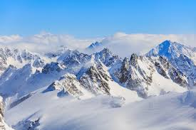

Alpy (fr. Alpes, niem. Alpen, wł. Alpi, słoweń. Alpe, ret. Alps, łac. Alpes) – najwyższy łańcuch górski Europy, ciągnący się łukiem od wybrzeża Morza Śródziemnego w okolicy Savony po dolinę Dunaju w okolicach Wiednia. Łańcuch ma długość około 1200 km, szerokość od 150 do 250 km i zajmuje powierzchnię około 220 tys. km². Grań główna Alp biegnie od przełęczy Bocchetta di Altare (dawna nazwa: Colle di Cadibona), która oddziela Alpy od Apeninów[c][2], najpierw w kierunku południowo-zachodnim, następnie północno-zachodnim, północnym i na najdłuższym odcinku w kierunku północno-wschodnim aż do Höflein an der Donau na północnym skraju Lasu Wiedeńskiego. Najwyższym szczytem Alp, a zarazem całej Europy, jest położony na granicy francusko-włoskiej Mont Blanc (wł. Monte Bianco). Wznosi się na wysokość 4808[1] m n.p.m. Alpy położone są na terytorium kilku państw europejskich, są to[c] od południowego zachodu: Francja, Monako[a], Włochy, Szwajcaria, Liechtenstein, Niemcy, Austria, Słowenia, Węgry.[b]
